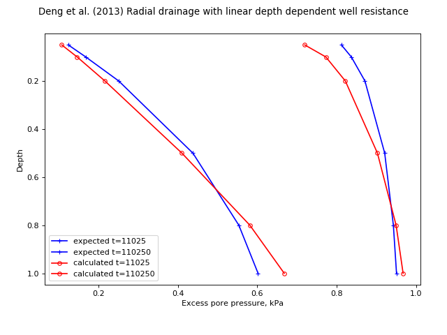

speccon example code: speccon1d_vrw_well_resistance_linear_with_depth_dengetal2013.py¶
# speccon1d_vrw example (if viewing this in docs, plots are at bottom of page)
# Single layer radial drainage only with depth dependent drain permeability
# Comapre with Deng et al. (2013) where kw = kw0*(A1-A2*z/l).
# There should be differences because
# Deng et al use the approximate well resistance method of hansbo
# where as speccon1d_vrw uses a more rigorous approach. However, the
# differences are consistant with rigorous vs approximate formulations
# for constant well resistance.
# The orignal solution of Deng et al. (2013)
# is implemented separately in
# geotecha.consolidation.dengetal2013and2014.
# Deng, Yue-Bao, Kang-He Xie, and Meng-Meng Lu. 2013. 'Consolidation
# by Vertical Drains When the Discharge Capacity Varies
# with Depth and Time'. Computers and Geotechnics 48 (March): 1-8.
# Doi:10.1016/j.compgeo.2012.09.012.
# This file should be run with python. It will not work if run with the
# speccon1d_vr.exe script program.
from __future__ import division, print_function
import numpy as np
from geotecha.speccon.speccon1d_vrw import Speccon1dVRW
import matplotlib.pyplot as plt
#Expected values
#t = time values
#por_99 = pore pressure values at time t for A2=0.99
#por_0 = pore pressure values at time t for A2=0 i.e. constant well resitance
#z = depth values
t = np.array(
[11025., 110250.])
z = np.array(
[0.05, 0.1, 0.2, 0.5, 0.8, 1.0])
por_99 = np.array(
[[ 0.81168066, 0.12412292],
[ 0.83668852, 0.16812724],
[ 0.87096244, 0.25118534],
[ 0.92073203, 0.43785721],
[ 0.94257216, 0.55353625],
[ 0.95050775, 0.60194473]])
por_0=np.array([[ 0.81096427, 0.12303176],
[ 0.83451179, 0.16380411],
[ 0.86536448, 0.23549986],
[ 0.90572564, 0.37150668],
[ 0.91883398, 0.42891426],
[ 0.92092841, 0.43879202]])
por=por_99
##############
##dengetal2013 input to generate expected values.
#dengetal2013(z=np.array([0.05, 0.1, 0.2, 0.5, 0.8, 1.0])*20,
# t=[11025., 110250.],
# rw=0.035, re=0.525,
# A1=1, A2=0.99, A3=9.07029478e-06,
# H=20,
# rs=0.175,
# ks=2e-8/1.8,
# kw0=1e-3,
# kh=2e-8,
# mv=0.2e-3,
# gamw=10,
# ui=1)
###############
reader = ("""\
H = 20
drn = 1
#re=0.525, rw=0.035, rs=0.175, kh/ks=1.8, n=15, s=5, kap=1.8
#mu=3.18131104929, eta = 2/re**2/mu=2.28089479942
mvref = 0.2e-3
khref = 2e-8
etref = 2.28089479942
kwref = 1e-3
dTh=khref/mvref*etref/10
dTw=kwref/H**2/mvref/10 / (15**2-1)
neig = 40
kw = PolyLine([0, 1], [1, 0.01])
#kw = PolyLine([0, 1], [1, 1])
mv = PolyLine([0,1], [1,1])
kh = PolyLine([0,1], [1,1])
#kv = PolyLine([0,1], [5,5])
et = PolyLine([0,1], [1,1])
surcharge_vs_depth = [PolyLine([0,1], [1,1])]
surcharge_vs_time = [PolyLine([0,0,10], [0,1,1])]
ppress_z = np.%s
tvals = np.%s
""" % (repr(z), repr(t)))
a = Speccon1dVRW(reader)
a.make_all()
# custom plots
title = ("Deng et al. (2013) Radial drainage with linear depth dependent well resistance")
fig = plt.figure(figsize=(8,6))
fig.suptitle(title)
#z vs u
ax1 = fig.add_subplot("111")
ax1.set_xlabel('Excess pore pressure, kPa')
ax1.set_ylabel('Depth')
ax1.invert_yaxis()
ax1.plot(por, z,
ls="-", color='Blue', marker="+", ms=5,
)
for i, line in enumerate(ax1.get_lines()[-2:]):
line.set_label("expected t={:d}".format(int(t[i])))
ax1.plot(a.por, z,
ls='-', color='red', marker='o', ms=5, markerfacecolor='None',
markeredgecolor='red',
label='calculated')
for i, line in enumerate(ax1.get_lines()[-2:]):
line.set_label("calculated t={:d}".format(int(t[i])))
leg = ax1.legend(loc=3)
leg.draggable()
fig.subplots_adjust(top=0.90, bottom=0.15, left=0.1, right=0.94, wspace=0.4)
#fig.tight_layout()
plt.show()
(Source code, png, hires.png, pdf)
{kind=link}
{kind=link}
